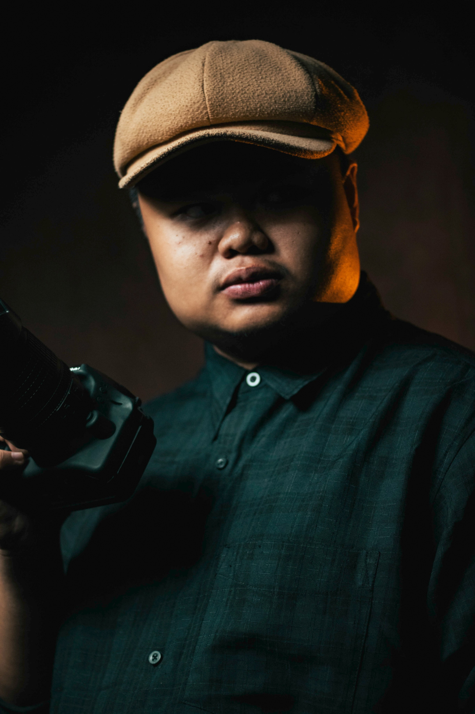

ABOUT ME
My name is Ernani O. Sabado Jr., also known as "Chubienggg." I am an independent photographer based in Sagay City, Negros Occidental. My primary passion lies in street photography, where I focus on capturing authentic, unscripted emotions and the untold stories unfolding within my local community. Whether I am documenting raw everyday life on the streets, framing candid portraits, or capturing the quiet details of nature through moon and bird photography, I view every frame as a way to preserve genuine moments in time.
Beyond street and personal creative work, I serve as a student photojournalist for The Northern Forum, the official publication of the State University of Northern Negros (SUNN). My practical experience spans a diverse range of client and community work as a freelance photographer, including pre-debuts, pre-birthdays, portraits, and solemn event coverage like funerals. I have also volunteered as a photographer during local festival celebrations, capturing the vibrant culture and energy of my hometown. I approach every project with dedication, narrative focus, and respect for my subjects.